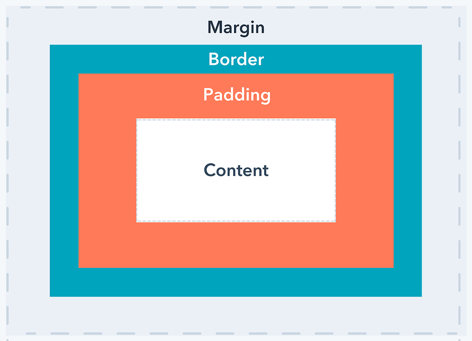

Difference's between
The difference between the three is that a margin is the space around an element’s border, padding is the space between an element’s border and the element’s content. Put another way, the margin property controls the space outside an element, and the padding property controls the space inside an element
Margin is the space between the border and the next element of your code. Think of the space outside the border and between it and the other elements. This is all the margin. Margin goes around all four sides of the content and you can target and change the margin for each side. Padding is the space that’s inside the element between the element and the border. Padding goes around all four sides of the content and you can target and change the padding for each side (just like a margin)
Explanation of the different parts:
*Content - The content of the box, where text and images appear
*Padding - Clears an area around the content. The padding is transparent
*Border - A border that goes around the padding and content
*Margin - Clears an area outside the border. The margin is transparent
